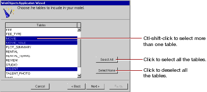

Table of Contents
Table of Contents  Next Section
Table of Contents
Next Section
Table of Contents  Previous Section
Previous Section

The wizard creates entities only for the tables you select. Since the Movies application doesn't interact with any of the other tables (for example, DIRECTOR, PLOT_SUMMARY, STUDIO, and TALENT_PHOTO), you don't need to include them in the model.
Table of Contents Next Section